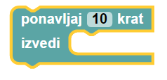

Tabornik Tine je na svoji prvi pohodniški preizkušnji. Da bo uspešno opravil izziv, mora prehoditi vse kamne, označene z zvezdico. Med hojo mora biti vedno obrnjen v smer premika in na noben kamen nesme stopiti dvakrat. Pomagaj Tinetu prehoditi vse kamne.
Tine si je po opravljeni preizkušnji dejal: »Te kamne lahko prehodim hitreje!« in se še enkrat podal na pot. Pomagaj mu jih ponovno prehoditi, vendar pazi, saj je število blokov tokrat omejeno, zato bo potrebno uporabiti zanko:
.
Čestitke, Tinetu je s tvojo pomočjo uspelo kamne prehoditi hitreje! Zdaj, ko se je dobro ogrel, bo z lahkoto prehodil še nekaj dodatnih kamnov.